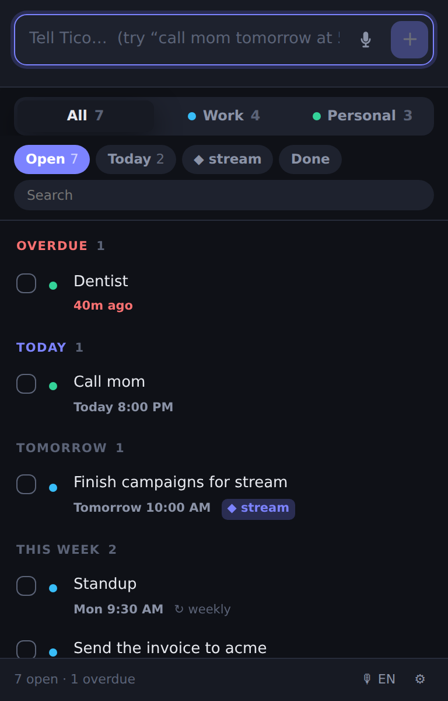

The task you forget is the one that took too long to write down. Type it or say it — Tico works out when it is due, files it, and brings it back on time.

This is the real thing — the same code that ships in the extension, running on this page. Type a task and watch what Tico pulls out of it.
Press the mic, talk, stop. Tico transcribes it, reads the date out of it and saves it — in English, Hebrew, Russian or Arabic. Nothing is ever recorded.
Every task lands in work or personal by what it says, with a dot that tells you which word decided. One click moves it, and Tico remembers the correction.
"finish campaigns for stream" is filed under Stream. Mention a name twice and Tico spots it everywhere after that — no project picker, no setup.
Chrome cannot fire a reminder while it is closed, so coming back after a weekend can mean several are due at once. Most extensions either bury you or mark them seen and say nothing. Tico shows you one summary and names every one of them.
One notification, not five. Nothing silently marked as seen.
Tico has no account, no server, no analytics and no ads. Your tasks are stored on your own computer and there is no backend for them to go to — not because we promise not to look, but because there is nowhere to look.
Yes, and the whole capture loop stays free. If a paid tier ever arrives it will be for things that cost something to run — syncing between your computers, for instance — and anyone already using Tico keeps what they have.
Not yet. Today everything lives on the machine you wrote it on, which is what makes the privacy promise above unconditional. You can export to a file and import it anywhere. Proper sync is the next thing being built.
Nothing fires — no extension can run while the browser is shut. What Tico does differently is what happens next: when you open Chrome again it shows you a single summary naming every reminder you missed, rather than firing them all at once or silently marking them as handled.
Yes — English, Hebrew, Russian and Arabic, switched with one button in the corner. Hebrew tasks are also displayed right-to-left properly, and Tico reads Hebrew dates: "מחר", "בעוד 20 דקות", "כל יום".
Only what you ask it to. The microphone opens while you are dictating and closes the moment you stop. No audio is stored or sent anywhere — Chrome does the transcription and Tico keeps only the text. Tico does not even declare the microphone as an extension permission; it asks once, the way any website does.
The same person who makes Kiko, the keyboard-layout fixer. Small extensions that each do one thing, with no accounts and no servers behind them.